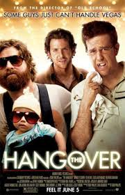
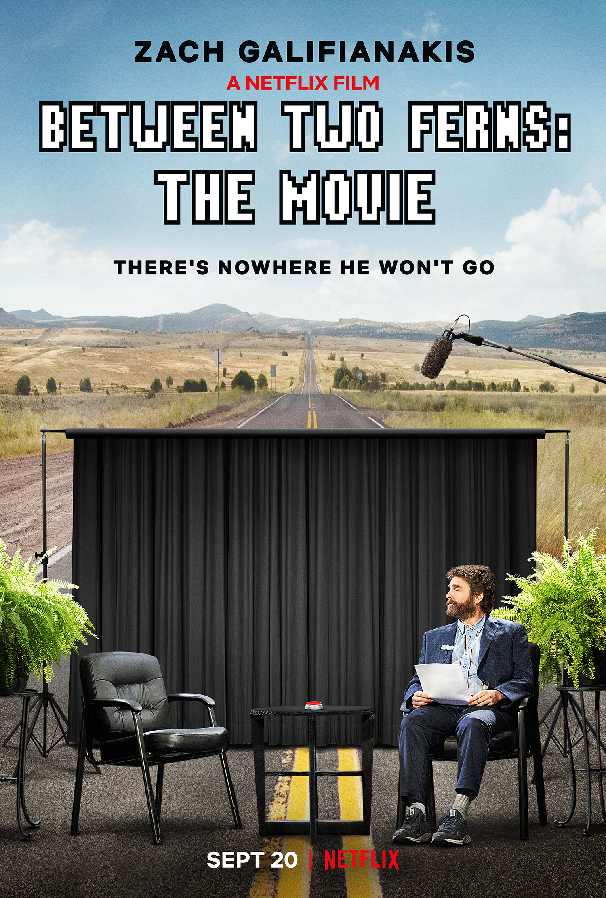

Zach Galifianakis was born in Wilkesboro, North Carolina, to Mary Frances (Cashion), who owned a community arts center, and Harry Galifianakis, a heating oil vendor. His father is of Greek descent and his mother is of mostly English and Scottish ancestry. Zach moved to New York City after failing his last college class by one point. Zach got his start performing his brand of humor in the back of a hamburger joint in Times Square. He toured the country, performing in coffee shops and universities. After more than a decade performing stand-up and making both television and film appearances, Zach broke through to wider recognition with his co-starring role as "Alan Garner", in the comedy mega-hit, The Hangover (2009). Later that year, he played a large role in the CGI-heavy kids movie, G-Force (2009), and then appeared in memorable supporting parts in the films, Up in the Air (2009) (as a laid-off employee), Youth in Revolt (2009) (as a loutish stepfather), and Dinner for Schmucks (2010), as one of the title characters. More recently, he co-starred with Keir Gilchrist in the teen dramedy, It's Kind of a Funny Story (2010), with Robert Downey Jr. in the road trip comedy, Due Date (2010), and alongside Will Ferrell in the political spoof, The Campaign (2012). He also voiced "Humpty Dumpty" in the animated film, Puss in Boots (2011), and reprised his character in both The Hangover Part II (2011) and The Hangover Part III (2013). In 2014, he appeared in the winner of the Academy Award for Best Picture, Birdman or (The Unexpected Virtue of Ignorance) (2014), and in 2016, he starred in the comedies Masterminds (2016) and Keeping Up with the Joneses (2016), released three weeks apart. When not performing and acting, Zach spends time at his home in the mountains of his native North Carolina, where he hopes to open a writer's retreat on a completely self-sustained farm.
- Beard Growing
- Portrayals of Likeable Idiots
- Authentic Anti-Star
- 
-

- 
- Bradley Cooper
- Robert Downey Jr
- Matthew McConaughey
- 2014 Emmy Award "Outstanding Short-Format Live-Action Entertainment Program" Between Two Ferns
- 2015 Emmy Award "Outstanding Short-Format Live-Action Entertainment Program" Between Two Ferns